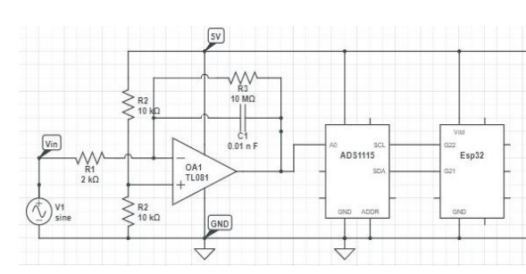
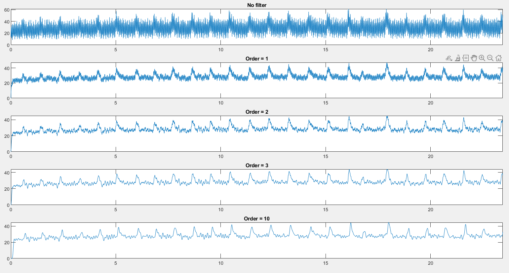
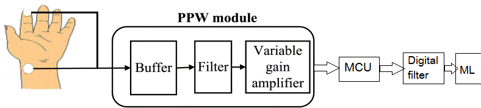

Signal Processing on Piezoelectric Sensors
Polytechnique Montréal — May 2022 to Jul 2022 (On-site, Québec, Canada)
Overview
- Built an end-to-end pipeline for piezoelectric sensor acquisition: analog front-end + real-time filtering + feature extraction.
- Validated heart-rate signals in time and frequency domains, then extended the system to estimate blood pressure using Pulse Transit Time (PTT).
- Trained a non-linear regression model on limited data (lab + clinical measurements) to predict SBP/DBP.
1) Hardware & Analog Front-End
- Designed an electronic circuit to acquire piezoelectric signals with a real analog low-pass filter for noise reduction before digitization.
- Implemented real-time acquisition on Arduino and added a digital low-pass filter to stabilize the signal under motion and contact variations.

Circuit prototype used for piezoelectric data acquisition and filtering.
2) Data Collection & Signal Conditioning
- Collected heart-rate waveforms and evaluated stability across sessions using filtering and basic artifact rejection.
- Used MATLAB for rapid iteration on DSP (filter design, spectral analysis) and Arduino for real-time constraints.
3) Heart Rate Analysis (Time & Frequency)

Time-domain waveform (filtered).

Frequency-domain spectrum (dominant HR component).
- Verified heart rate consistency by matching periodic components in the spectrum with time-domain peak intervals.
- Prepared features for later BP estimation: peak timing, inter-beat intervals, spectral energy bands, and signal quality metrics.
4) Blood Pressure Estimation via Pulse Transit Time (PTT)

Two-sensor setup: finger + wrist to estimate PTT.

Peak/valley detection used to compute time delay and derive PTT features.
- Measured the travel time of the pulse wave between two locations: PTT = Δt between corresponding peaks (and valleys) from finger and wrist signals.
- Connected PTT to blood pressure through pulse-wave velocity (PWV) and vessel elasticity modeling.
Key relations (model intuition)
\(E = E_0 e^{\alpha P}\), \(PWV = \sqrt{\frac{Eh}{2r\rho}}\), \(PWV = \frac{L}{PTT}\)
Where \(P\) is mean BP, \(L\) is the distance between sensors, and other terms describe vessel/blood parameters.
5) Machine Learning (Small Data, Non-Linear Regression)
- Built a Python ML pipeline to predict SBP/DBP from PTT + HR + spectral features.
- For limited datasets, used regularized non-linear regression (typical strong choices): SVR (RBF), Random Forest Regression, or Gaussian Process Regression with cross-validation and careful feature scaling.
- Compared two feature strategies: (1) Time-domain peak/valley alignment and Δt extraction, (2) Frequency-domain descriptors (dominant band energy, spectral peak shifts).
Tech Stack
My Contributions
- Electronics: circuit design for stable piezo acquisition + analog filtering.
- Embedded DSP: Arduino real-time low-pass filtering and acquisition workflow.
- Signal Processing: HR validation in time/frequency, feature extraction, and signal quality checks.
- ML Modeling: non-linear regression pipeline for SBP/DBP prediction from PTT-based features.